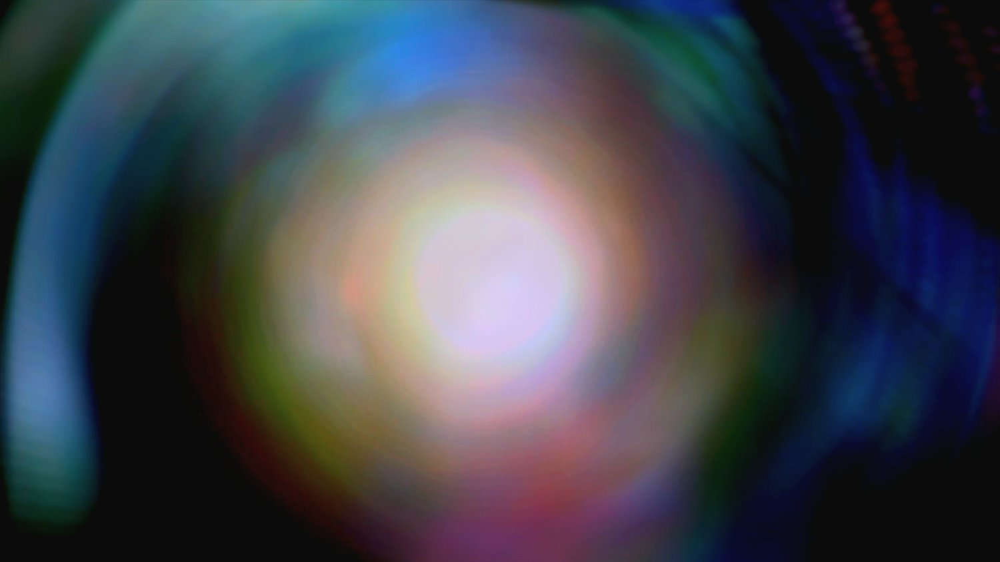

WORKS · LIVE
루프 스코프LUF Scope

LUF Scope는 오직 스크린과 카메라, 그리고 지금 이 순간을 바라보는 관객들의 모습의 피드백으로 이루어지는 라이브 영화다. 프로젝터 내부 컬러 휠의 스펙트럼을 셔터스피드 조절장치를 통해 스크린에 노출시키는 원리를 활용해, 스크린과 카메라 그리고 이 순간을 바라보는 관객들의 이면을 담는다. 회전운동은 프로젝터 내부, 스크린과 객석, 카메라 렌즈와 눈들 사이에서 실시간으로 순환하고, 영화의 시간은 지금 이 순간에 주목한다.
LUF Scope is a live film made only from the feedback between the screen, the camera and the presence of the audience in the here and now. Using a shutter-speed controller, the colour spectrum of the projector’s internal colour wheel is exposed onto the screen, revealing the optical mechanism of projection through motion. Rotation circulates in real time — inside the projector, between screen and audience, through lens and eyes — and the time of the film is anchored in this moment.
비평Review
권희수는 최소한의 조건에서 필름 영사라는 매체의 최대한의 가능성을 탐구하는 확장 시네마 작업을 선보인다. 영사기의 빛을 렌즈 쪽으로 돌리고 셔터 스피드를 조절함으로써, 그녀는 빛과 형태, 색을 변형시켜 육안으로는 감지할 수 없는 시각적 공간을 생생하게 불러낸다. 이미지와 스크린 사이의 환영적인 거리에서 떠오르는, 실시간으로 펼쳐지는 매혹적인 감각의 경험.
— 미켈 마르티 프레이샤스 (IFFR)
Audiovisual performance artist and filmmaker Kwon HeeSue creates an expanded cinema work that explores the maximum possibilities of film projection from minimal conditions. By turning the projector’s light toward the lens and altering the shutter speed, she plays with light, shape and colour, bringing to life visual spaces imperceptible to the eye. A real-time, fascinating sensory experience that emerges in the illusory distance between the image and the screen.
— Miquel Martí Freixas, IFFR
크레딧Credits
- ArtistHeeSue Kwon
- Duration40 min
- Art directionssound//vision
- 영상 시스템 개발홍성민 (2026 버전)
- 큐레이션Outtakes Screening Group — Wenxuan Li, Yujian Wang, Getong Wang, Yisen Jiang
상영 · 전시Screenings & exhibitions
- 54th International Film Festival Rotterdam — 2025 · 로테르담2025 · Rotterdam
- 《Invisible Spectrum: Media Imagination in Experimental Cinema》 — 2025 · 베이징 · 아웃테이크스크리닝그룹 기획2025 · Beijing · curated by Outtakes Screening Group
- 《바깥은 없다 (No hay afuera)》 PROYECTOR 2026 · HYPER HOUSE — 2026년 9월 12일 · 마드리드 · 퍼포먼스 19:3012 September 2026 · Madrid · performance at 19:30
영상Video


